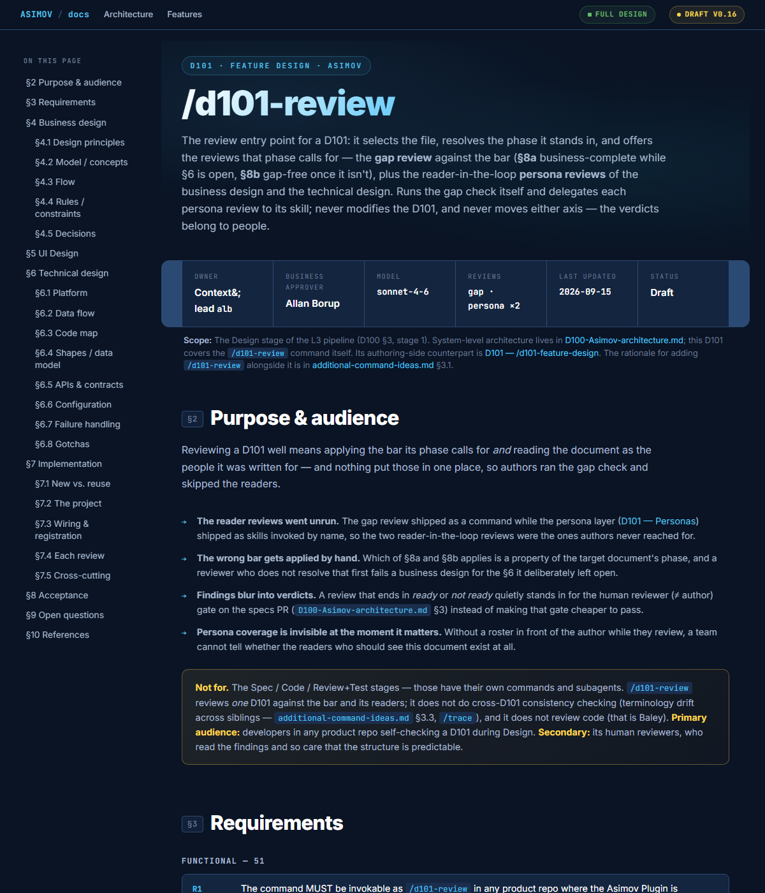

D101 — Feature design
One design per feature. Written by interview, rendered as a self-contained HTML page next to the code. trial
Anatomy
Key
Open until the business design is signed
Arrows say who reads each part.
Two bars
- Business-complete is the author's call. It stops them writing the technical section before the business shape holds.
- Gap-free is a reviewer's call, and the reviewer is never the author. It means an agent can build from it without asking a question.
Two axes
- Phase: business design → full design. Moved by the author when the technical design is in.
- Status: draft → approved. Moved by the business approver, normally once the technical half exists, because the estimate depends on it.
Neither implies the other. No command ever records an approval.
The stop
After the business design the command stops and declares the technical section open in the file. The personas and the approver read it with no technology chosen. The technical half needs a second run.
Who reads it
- The business approver signs the what and why. How a feature runs through it →
- A reviewer who is not the author decides it is gap-free.
- The personas read it first, as stand-ins for the signers. Who they are →
- The agents build, test and review from it. What they read →
Where it comes from, where it goes
A feature scope in an A100 report or a task on the board starts it. A finished D101 feeds an S101 implementation plan and its S102 task specs. The document model →
Why HTML, and the review cache
- HTML renders for the approver and parses for the agent. Why HTML →
/asimov-design-reviewleaves its findings in a sibling.review.md; the next design run offers them and deletes the file once used. A cache, not a record.
What it looks like
